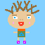

You Woke Up Like This
This game starts out when the user wakes up covered in purple sludge in an unknown field. The objective is to find a way home to their bed. There is more than one way to arrive at the destination just as there are several ways to die in the process. After reaching a certain point in the game, the user will realize they can find their way home by using the GPS, bribing a police officer, or making it to the nearest taxi operative. There are many tricks on the way.

This static animation represents the character in which the game is carried out.
This static image represents the GPS that can be collected from the players backpack - which can ultimately direct the player to their home.
This static animation displays a frog - just one of the many critters hiding in the forest.
This static animation illustrates the police car that arrives at the scene after being called.
This static image concludes the game and is displayed once the player reaches their bed.